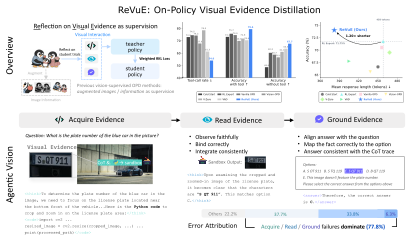
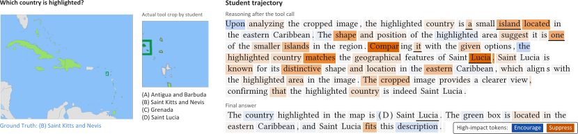

On-Policy Visual Evidence Distillation

Abstract
Too Long; Don’t Read
From visual mistakes to better supervision
Find the first failure. Give the teacher the missing context. Focus learning where that context matters.
AcquireLook in the right place.
ReadRead what is actually there.
GroundUse it to reach the answer.
Two islands, not one

Better results across two model families
Weighted-average accuracy (%). Higher is better.
Hover or focus a value to compare.
Bold values mark the best OPD result within each model family, including ties. Weighted averages account for benchmark sample counts.
View the complete results table
What the trajectories reveal
The aggregate results raise a practical question: what does a useful reflection actually correct? These cases follow the evidence from the first observation to the final answer.
Citation (BibTeX)
arXiv:2609.36838, 2026.